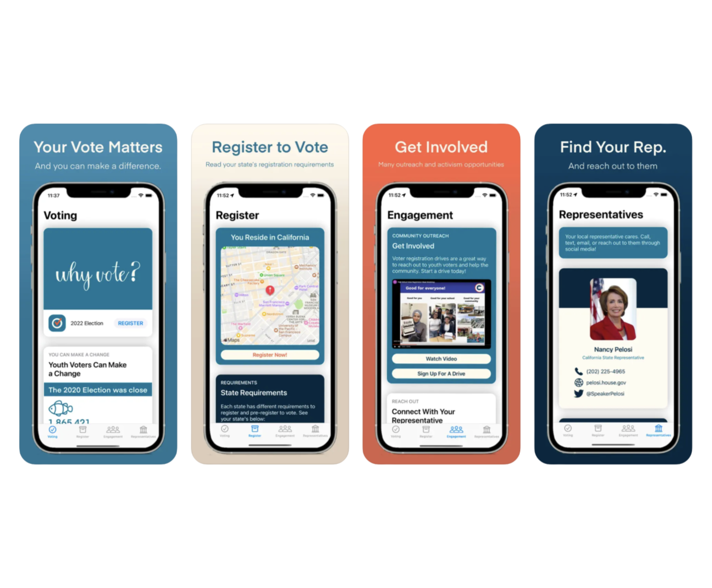
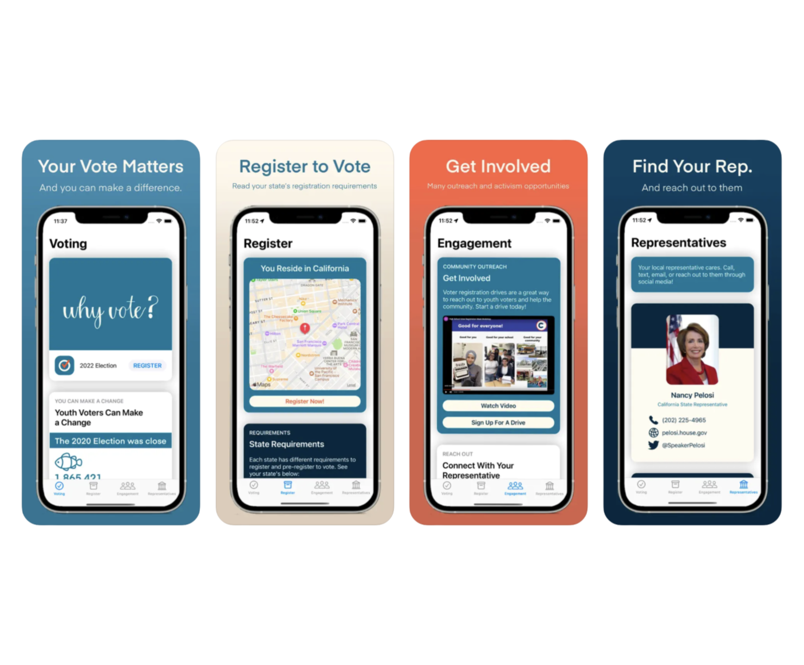

Cedars-Sinai Medical Center · Intern Project
DECN (Discrete Element Capture from Notes)
An LLM tool and pipeline that converts unstructured text data into structured discrete fields, allowing for analysis by doctors and data analysts at California's largest hospital.
Technologies: HTML/CSS & JavaScript frontend. Python, Sanic, & OpenAI API backend. Integrated w/ AWS, and published using Docker.
Technologies: HTML/CSS & JavaScript frontend. Python, Sanic, & OpenAI API backend. Integrated w/ AWS, and published using Docker.
.png)
.png)
.png)
iOS App · 20,000+ downloads
ScrollType Apple Watch Keyboard
Apple Watch keyboard for text messaging with better accessibility features. Published on the Apple App Store.
Technologies: Swift, watchOS/WatchKit
Technologies: Swift, watchOS/WatchKit


iOS App · Apple Developer Challenge Winner
Epic Word Trip
A Wordle-style game app that uses signs and license plates on the roads as letters. Built with Swift and LiveText, and won the Apple Swift Student Developer Challenge in 2022. Published on the Apple App Store.
Technologies: Swift, text-in-image processing
Technologies: Swift, text-in-image processing

Autonomous Robot · MIT Inventeam $7,500 Grant
Stride - Autonomous Navigation Walker
A self-driving walker for elderly adults that detects obstacles using LiDAR and sensors to navigate to the user when placed out of reach. Click to see
full technical documentation.
Technologies: LiDAR, infrared, bluetooth low energy (BLE), and ultrawideband (UWB) sensors. C++ and ROS on Raspberry Pi for movement logic.
Technologies: LiDAR, infrared, bluetooth low energy (BLE), and ultrawideband (UWB) sensors. C++ and ROS on Raspberry Pi for movement logic.

.jpg)

iOS App and Device · MIT Inventeam $10,000 Grant
Drowning Detection Wearable
A waterproof wristband that detects signs of drowning with heart and oxygen sensors and sends real-time alerts to a compatible iOS app. Funded by a $10,000 MIT InvenTeam grant.
Technologies: Blood oxygen saturation, heart rate, and bluetooth low energy (BLE) sensors. C++ on Arduino for the wearable, and Swift with CoreLocation and WatchConnectivity for app.
Technologies: Blood oxygen saturation, heart rate, and bluetooth low energy (BLE) sensors. C++ on Arduino for the wearable, and Swift with CoreLocation and WatchConnectivity for app.
 

iOS App · Congressional App Challenge 2nd Place
Youth Voter
A civic engagement app that helps teens preregister to vote, stay informed about elections, and understand their voting rights by state. Published on the Apple App Store.
Technologies: Swift, Google APIs, Congress.gov API, Core Location library
Technologies: Swift, Google APIs, Congress.gov API, Core Location library
-1.png)
.png)
.png)
iOS App
ScrollPhrase
Allows for sending of quick texts on Apple Watch, and uses keyboard from my previous app ScrollType.
Technologies: Swift, watchOS/WatchKit
Technologies: Swift, watchOS/WatchKit